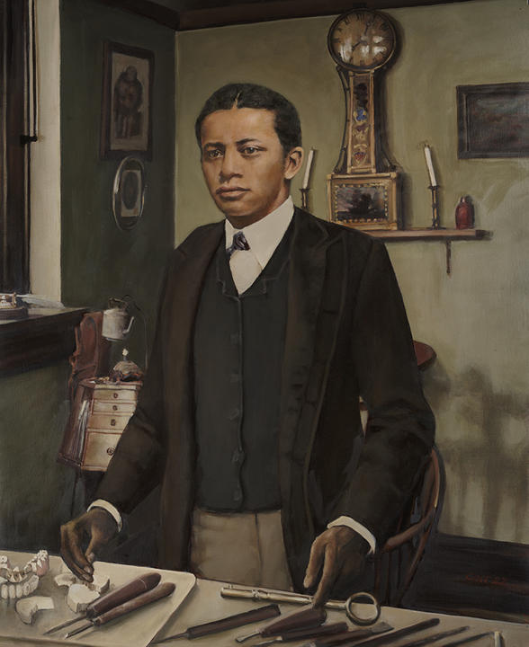

George Franklin Grant

George Franklin Grant foi um inventor e dentista afro-americano, conhecido por suas contribuições tanto para a odontologia quanto para o golfe. Ele foi o primeiro professor negro da Harvard School of Dental Medicine e fez importantes avanços no tratamento de fissuras palatinas. Além disso, Grant patenteou o primeiro tee de golfe moderno, tornando o jogo mais acessível e padronizado.
Principais Contribuições
- Primeiro professor negro da Harvard School of Dental Medicine.
- Desenvolveu técnicas avançadas para o tratamento de fissuras palatinas.
- Patenteou o primeiro tee de golfe moderno, usado até hoje.
- Teve um impacto duradouro tanto na odontologia quanto no esporte.
Saiba mais
Voltar